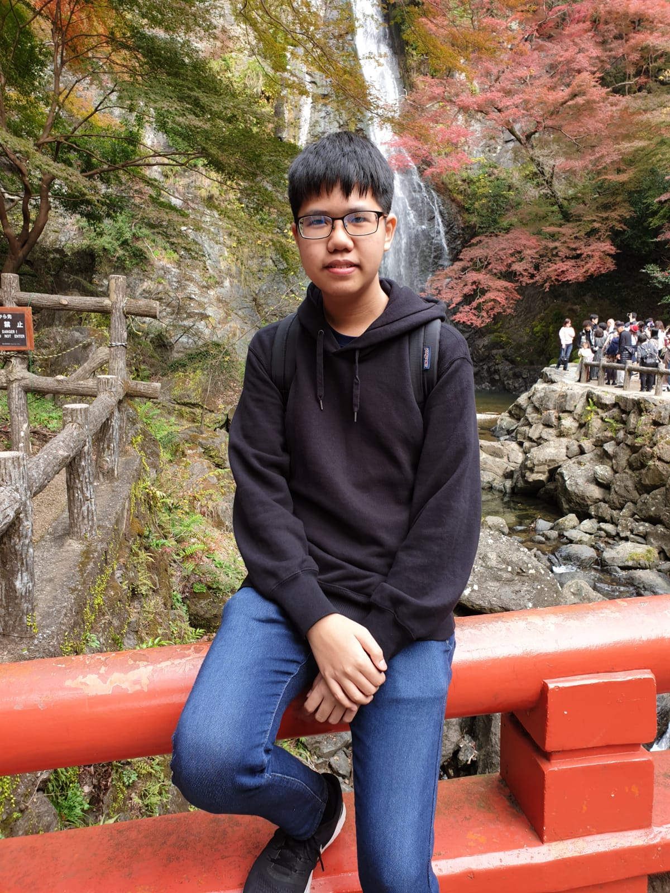

Lee Wen Kang
Information Technology Student
Hello! I am Wen Kang and currently in the School of ICT at Ngee Ann Polytechnic (NP). I first started to
have
interest in coding when I was secondary 4, so I decieded to try out different small projects, like a discord
bot and a website. When I was certain I wanted to learn Information Technology(IT), I applied for the Early
Admissions Excersise at NP and eventually got accepted in the Information Technology
course. Throughout my time in NP I hope to learn and grow more about IT and the world.
During my free time, I would personally embark on small personal projects. Using these projects I would
learn to use different tools and APIs. These include Flutter, React, Electron and Firebase. By
embarking on these small projects I am able to explore my interests and build up my knowledge outside of
what is thought in School.